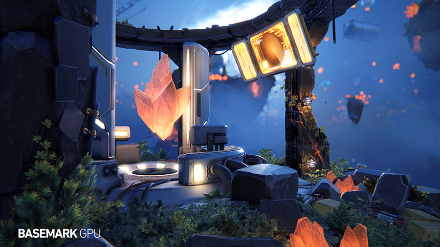
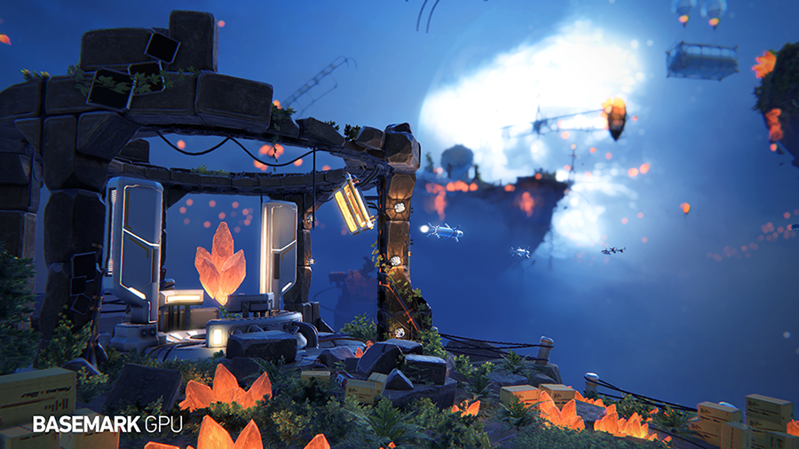
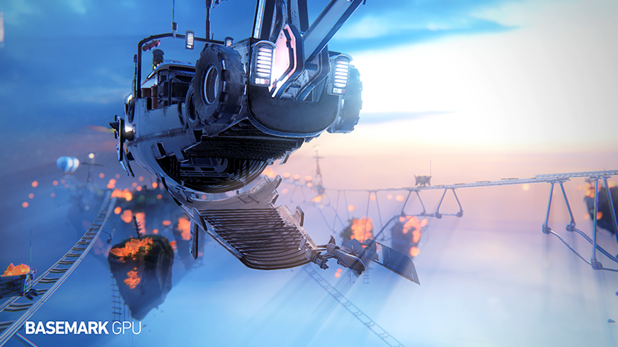
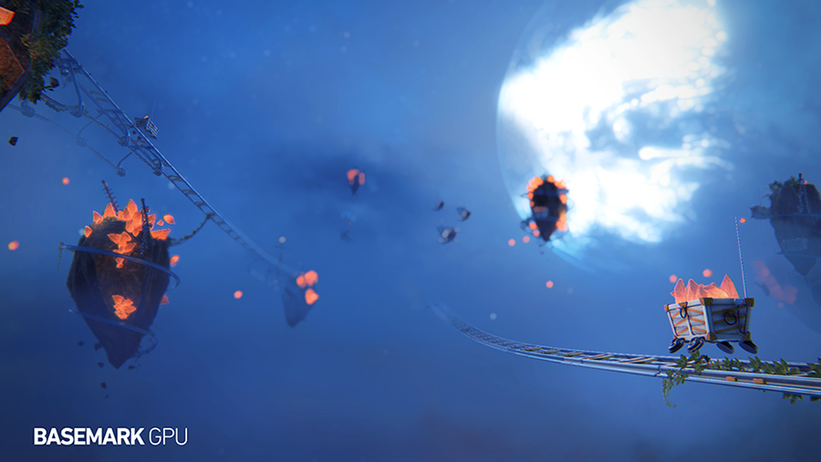
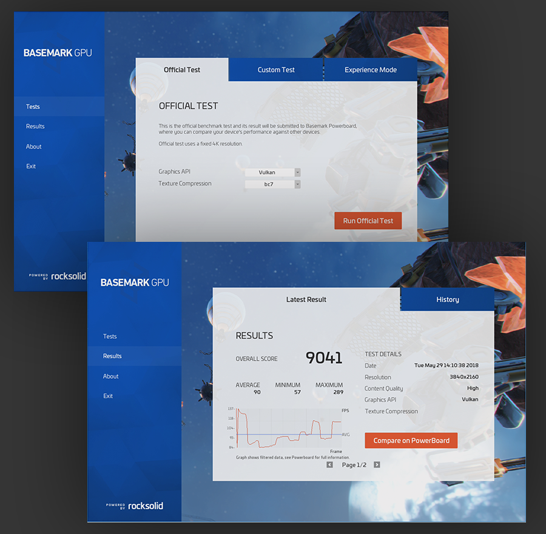

Basemark GPU
As both art and technical art lead for this GPU benchmark running on an in-house engine (Rocksolid engine), my tasks included creating concepts, 3d models, animations, lighting, scene setup, mobile optimization and UI design, as well as creating necessary tools for asset creation.
The benchmark was created while the engine was still being built, so importing the assets correctly and creating an optimal art workflow required creating additional tools (3DS Max, Maya, Unity, and python scripts) partly to make up for features that were missing from the engine at the time:
• Separating multiple workloads (high/mid/low) without having to create separate scenes.
• Exporting additional scene data from DCC to engine.
• Temporary culling data calculated from objects visible to the camera.
• Making up for a missing light editor by leveraging an existing engine (Unity).
• Validation for scene and files.




